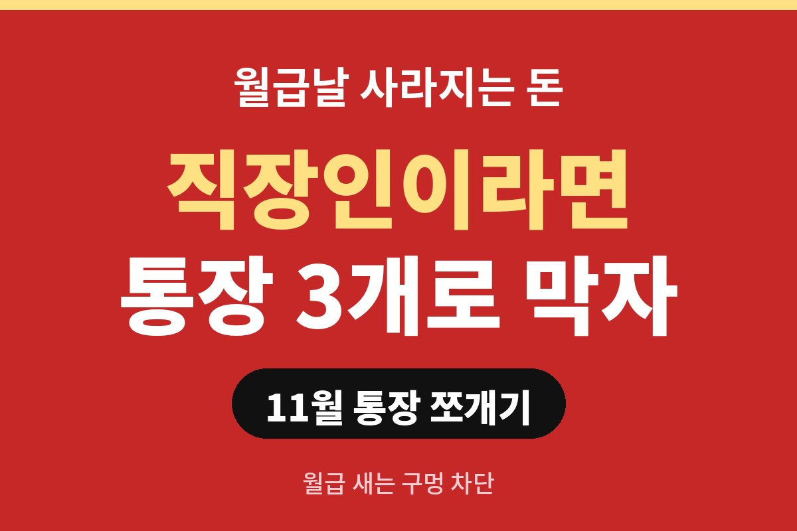

통장 쪼개기는 월급 통장 하나에 몰려 있던 돈을 3개 통장으로 나누는 것만으로도 월말에 텅 비는 일을 크게 줄여 주는 방법이다. 매달 월급이 들어오자마자 사라진다고 느끼는 직장인이라면, 돈이 어디서 새는지 모르는 상태가 진짜 문제는 아닐까?
월급 통장 하나로 모든 돈을 관리하면 잔액이 곧 내가 쓸 수 있는 돈처럼 보인다. 문제는 그 잔액 안에 월세, 보험료, 통신비, 적금처럼 이미 쓰기로 정해진 돈이 섞여 있다는 점이다. 그래서 통장을 보면 아직 여유가 있는 것 같지만 실제로 쓸 수 있는 돈은 훨씬 적다.
통장 쪼개기의 핵심은 돈에 역할을 미리 주는 것이다. 고정지출은 고정지출 통장에, 생활비는 생활비 통장에, 저축은 저축 통장에 두면 각 통장의 잔액이 곧 그 용도의 남은 한도가 된다. 이렇게 하면 의지력에 기대지 않아도 지출이 자연스럽게 정리된다.
처음부터 통장을 많이 만들 필요는 없다. 3개로 시작하는 것이 가장 관리하기 편하다. 첫 번째는 월급이 들어오는 월급 통장이다. 여기서 월세, 공과금, 보험료, 통신비 같은 고정지출이 자동이체로 빠져나가도록 설정한다.
두 번째는 생활비 통장이다. 식비, 교통비, 커피값, 쇼핑처럼 변동지출만 이 통장에 연결된 체크카드로 쓴다. 한 달 쓸 금액을 월급날 이 통장으로 옮겨 두면 잔액이 줄어드는 속도가 눈에 보인다. 세 번째는 비상금과 저축을 담는 통장이다. 월급날 가장 먼저 이 통장으로 이체되도록 해 두는 것이 중요하다.
| 통장 | 역할 |
| 월급 통장 | 월급 입금, 고정지출 자동이체 |
| 생활비 통장 | 체크카드로 쓰는 변동지출 |
| 비상금·저축 통장 | 월급날 바로 이체, 손대지 않기 |
가장 많이 막히는 부분이 생활비를 얼마로 잡느냐이다. 방법은 간단하다. 최근 두세 달의 카드 내역을 살펴서 고정지출을 뺀 나머지 지출의 평균을 구하면 된다. 그 금액에서 조금 빠듯하게 한도를 잡아 보는 것이 좋다. 처음에는 불편해도 한두 달 지나면 소비 습관이 한도에 맞춰진다.
저축은 남는 돈으로 하는 것이 아니라 먼저 떼어 놓는 것이다. 쓰고 남은 돈을 모으겠다고 생각하면 대부분 남는 돈이 없다. 월급날 자동이체로 저축 통장에 먼저 보내 두면 남은 돈으로 생활하는 구조가 만들어진다. 금액이 작아도 꾸준히 이어 가는 것이 더 중요하다.
가장 흔한 실패는 통장만 나눠 놓고 이체를 수동으로 하는 경우이다. 귀찮아서 한 번 거르기 시작하면 금방 예전 방식으로 돌아간다. 모든 이체는 월급날 기준으로 자동이체를 걸어 두는 것이 안전하다. 또 하나는 생활비 통장이 바닥났을 때 저축 통장에서 슬쩍 꺼내 쓰는 경우이다. 비상금 통장은 정말 비상일 때만 쓴다는 규칙을 스스로 정해야 한다.
카드 결제일과 월급일이 어긋나는 점도 확인해야 한다. 신용카드를 쓴다면 결제 금액이 한꺼번에 빠져나가 계획이 틀어질 수 있다. 통장 쪼개기를 처음 시작하는 단계라면 체크카드 위주로 생활비를 관리하다가 익숙해진 뒤 신용카드를 섞는 편이 좋다. 연말이 가까운 11월은 한 해 소비를 돌아보고 내년 계획을 세우기에 알맞은 시기이다. 통장 구조를 지금 바꿔 두면 연말 지출이 몰리는 12월도 훨씬 덜 불안하게 보낼 수 있다.
지금 쓰는 월급 통장에서 매달 가장 빨리 빠져나가는 돈은 무엇인지 한번 적어 보면 어떨까? 도움이 되셨다면 구독과 공감을 부탁드린다.
※ 본 글은 일반적인 정보 제공이며 투자 권유가 아닙니다. 개인 상황에 따라 적합한 방법은 다를 수 있습니다.